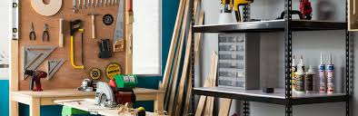

Encuentra todo lo necesario para tu hogar con productos económicos y de calidad.
Los artículos de jardinería son esenciales para mantener tu jardín en excelentes condiciones. Aquí tienes algunos productos comunes:
Los utensilios y herramientas de cocina pueden facilitar la preparación de tus comidas. Aquí tienes algunos productos esenciales:
Mantén tu hogar ordenado con soluciones de almacenamiento prácticas y eficientes:
Las herramientas básicas para el hogar son esenciales para cualquier reparación pequeña:
Para mantener tu hogar impecable, es indispensable contar con productos de limpieza de buena calidad: